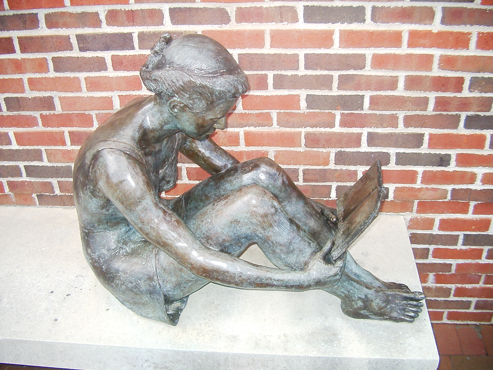

My Favorite Books
Andrew Forbes

My Three Favorite Books Fiction Books
-
Perfume: The Story of a Murderer - by: Patrick Suskind
Although I love this book, it is not for the faint of heart, so if anyone ends up reading this book based off of my recommendation know that it deals with some VERY adult themes. That being said, this book is about a boy who is born with an extraordinary sense of smell, and zero emotions. His mother abandons him and he's left to grow up in an orphanage. Throughout the course of the book he becomes a master perfumer and a killer.
-
Brave New World - by: Aldous Huxley
This book is a classic dystopian tale, it takes place in a society called "The World State". In this futuristic dystopian society, humans are grown in labs and are programmed to value society above themselves or other individuals. I won't ruin the plot beyond that -- but it's my favorite dystopian book. Eat your heart out 1984.
-
The Wreckers (The High Seas Trilogy) - by: Iain Lawrence
Interestingly enough, if you read the description of this book, it may sound like the most adult of the bunch; but actually this book is intended for young adults. I read this book in high school and loved it. It's about a coastal community who purposely lures ships in to wrecking on their shores, and then pillage the wreckage.